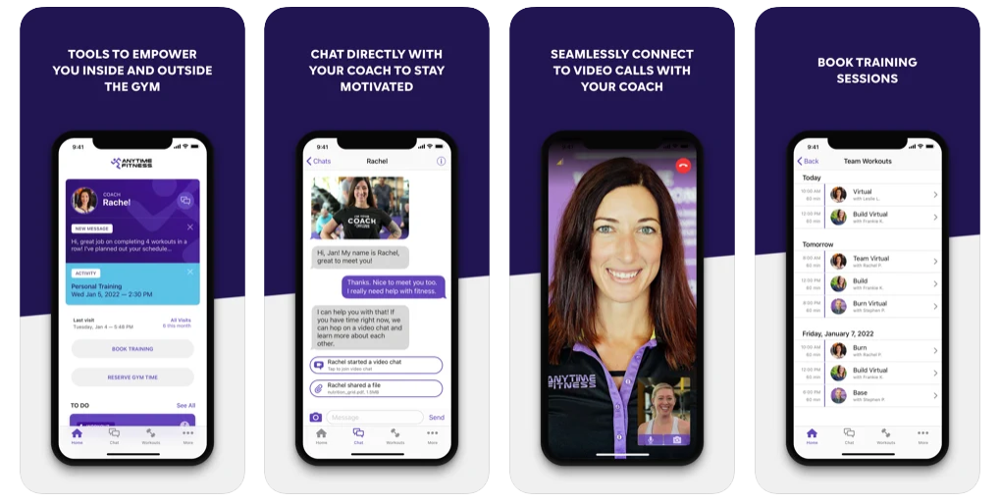
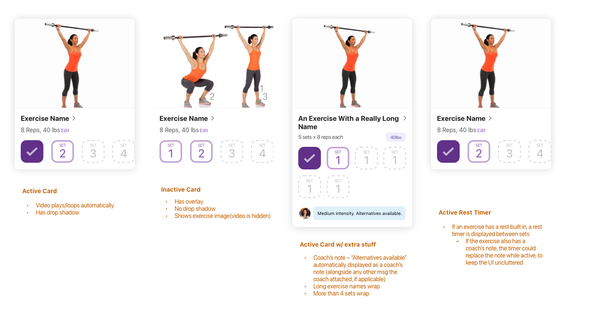
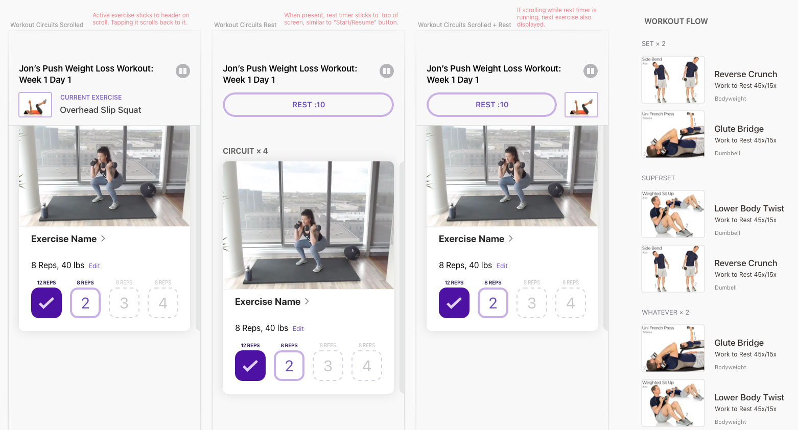
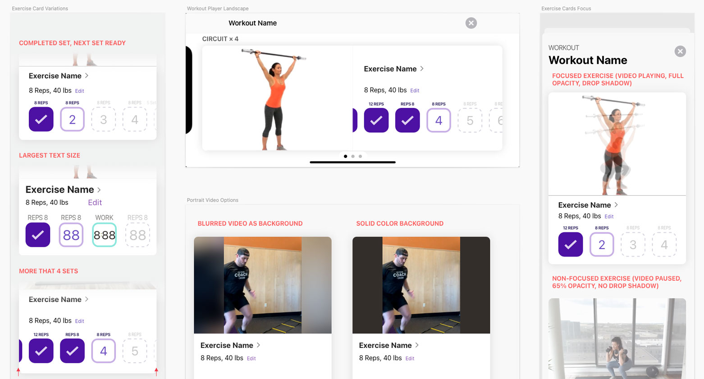
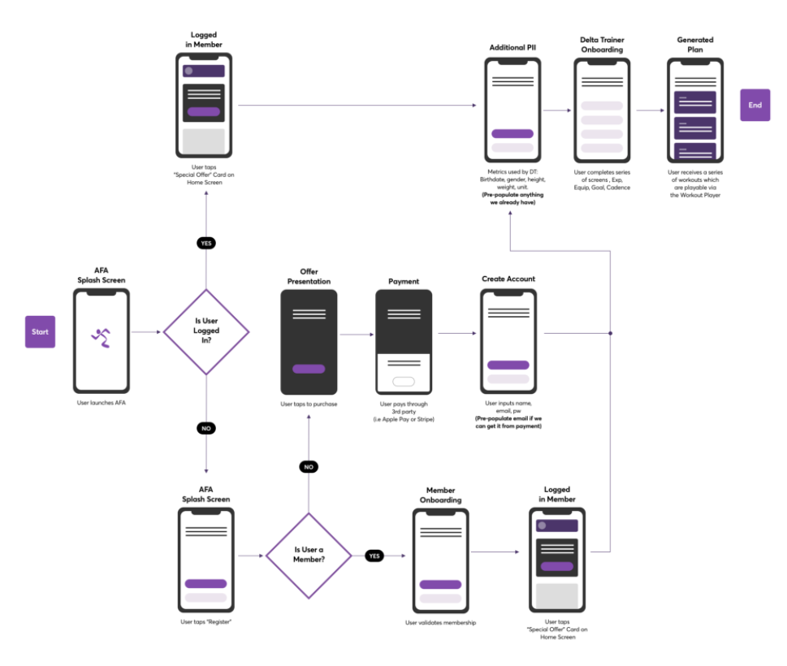

The Anytime Fitness member app is a tool members can use to follow a fitness plan, track their progress, and communicate directly with a coach. Recent enhancements to the app included a new Workout Player for guiding the member through workouts that have either been generated by an AI or assigned by a coach, depending on the membership level.
I built a functional prototype of the workout player in Figma early in the process, which I put in to users' hands to better understand how they would interact with the app in a real-world workout scenario.

The new Workout Player was replacing an existing player which had been created specifically to integrate with the Anytime Fitness Coaching platform. The new Workout Player would also need to integrate with a third-party AI.
I worked closely with developers to understand the complex logic and configurations we needed to support to work with both systems.
As often as possible, I shared designs with fitness coaches to make sure what we were presenting aligned with their coaching methods.



Since the AI-driven aspect of the workout programming relied on information we didn't necessarily already have, we also created a new onboarding and intake process to account for both existing and new users.
For initial onboarding, an intake process allows the user to provide information about their fitness goals, experience, available equipment, and other details. This information is used to generate a workout plan which is evolves with them over time based on their performance.

Due to the highly interactive nature of the Workout Player and it's dependency on auto-playing videos, Figma is the perfect tool for prototyping this experience. It allowed me to simulate the UX with a remarkable degree of nuance and accuracy.
It also enabled me to load the prototype onto test user's phone early and often as I honed the UX based on usability feedback.
With Figma I was able to demonstrate the motion for some of the more complex aspects of the UI, in particular the horizontal carouse ling and repetition of a series of exercises as the user progresses through a circuit.
Critical features such as rest timers, exercise timers, and user logging were added iteratively as we developed the UI.
An extensive pilot of the new Workout Player revealed concerns about the quality of the AI programming. Thankfully, since it was designed to also work with the existing coach-driven system, we were able to release the updated player for that audience, while the AI vendor improves their offering.